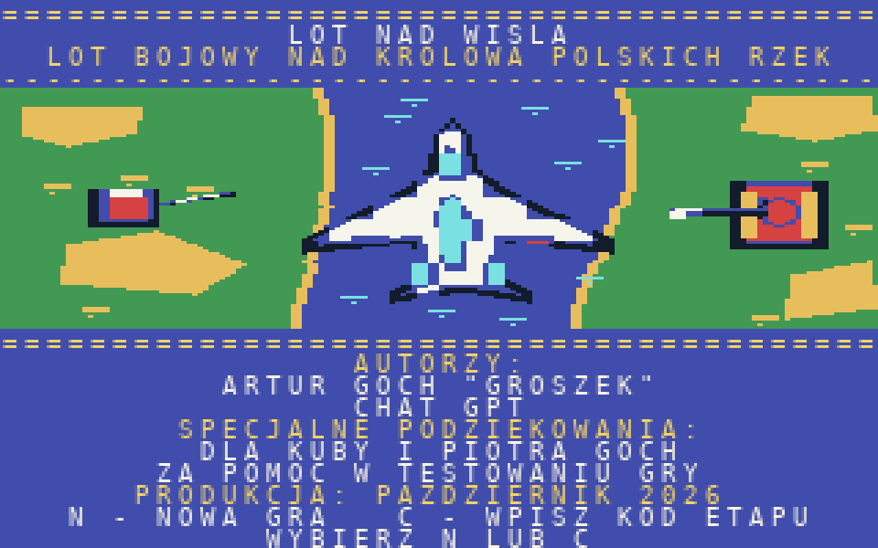

LOT NAD WISŁĄ
Wsiądź do wojskowego myśliwca i ruszaj w niebezpieczny lot nad Wisłą. Omijaj brzegi, walcz z wrogimi samolotami i jednostkami na lądzie, pilnuj paliwa i dotrzyj do finałowego starcia.

O GRZE
LOT NAD WISŁĄ to polska gra zręcznościowa napisana w asemblerze dla oryginalnego Commodore 64. Płynnie przewijana rzeka tworzy trasę lotu przez sześć etapów. Nad wodą spotkasz wrogie myśliwce, a na brzegach czołgi i działa przeciwlotnicze. Każda kolizja z lądem jest niebezpieczna. Paliwo uzupełniasz, przelatując nad stacjami CPN. Na końcu czeka okręt-boss.
TWÓRCY
Artur Goch „Groszek” i ChatGPT.
Specjalne podziękowania dla Kuby i Piotra Gochów za pomoc w testach.
Październik 2026.
Uwaga o wersji: strona udostępnia obraz D64 kompilacji I1.4, zachowany w repozytorium gry. Nowsze wersje są rozwijane oddzielnie i nie zostały jeszcze podmienione w bibliotece RETRO PRZYSTANI.